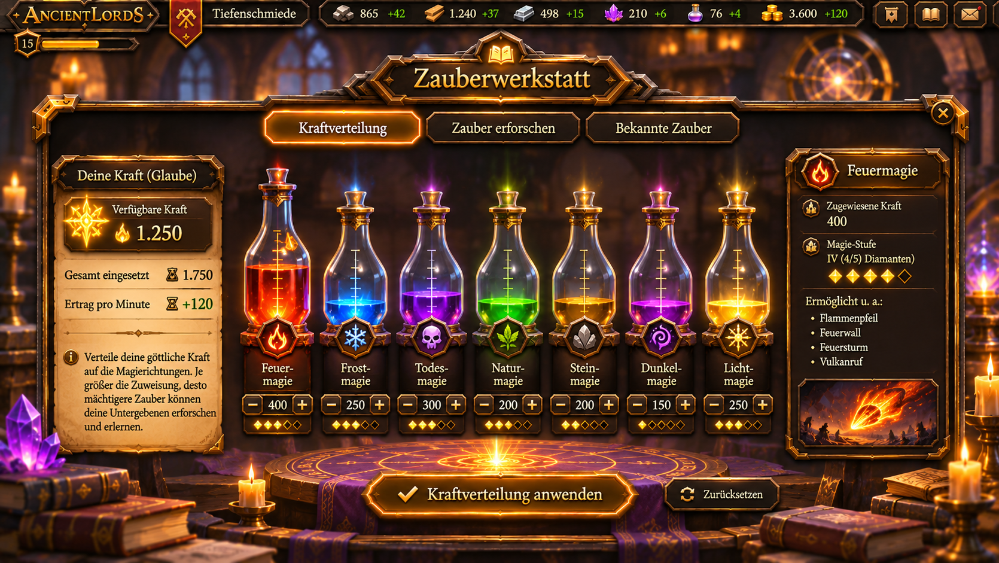

Feuermagie
Feuermagie gibt der Hitze Gestalt. Eine Flamme kann sich zum Pfeil bündeln oder als Feuerwand emporsteigen.
Magie ist ein weiterer Eckpfeiler der Macht der Untertanen. Um ihre vielen Facetten zu beherrschen, müssen zauberkundige Untertanen sie erst erlernen. Dafür opfert der Alte Gott einen Teil seiner eigenen Kraft. Er entscheidet, auf welche Magierichtungen er diese Kraft verteilt und welche Kräfte er seinen Untertanen damit zur Verfügung stellt.

Feuermagie gibt der Hitze Gestalt. Eine Flamme kann sich zum Pfeil bündeln oder als Feuerwand emporsteigen.
Frostmagie schöpft ihre Kraft aus der Kälte. In ihren Zaubern nimmt sie die Gestalt von Reif und Eis an.
Todesmagie befasst sich mit dem Vergehen des Lebens und der Schwelle zwischen Leben und Tod.
Naturmagie entspringt der lebendigen Welt. Ihre Zauber greifen die Kraft auf, die Blätter austreiben und Wurzeln wachsen lässt.
Steinmagie ist die Kunst von Fels und Gestein. In ihr kommen die Schwere des Berges und die Härte des Steins zum Ausdruck.
Dunkelmagie formt Schatten und Finsternis. Ihr Gebiet ist das Zwielicht, in dem selbst Vertrautes seine Konturen verliert.
Lichtmagie bündelt Helligkeit und Strahlkraft. Ihr goldenes Zeichen erinnert an die Sonne, deren Strahlen das Dunkel durchdringen.
Sobald der Alte Gott ihnen seine Kraft zur Verfügung stellt, können die zauberkundigen Untertanen die Zauber dieser Richtungen erforschen. Wie viele Kräfte eine Figur erlernt, hängt von ihrer Erfahrung und der Zeit ab, die sie in die Forschung investiert. Im Kampf setzt sie ihre erlernten Kräfte eigenständig ein.
Der Wert Lernen leitet sich aus Mystik und Wissen ab und beeinflusst Anzahl und Lerntempo. Die Zauberakademie verkauft Zauber. Wie Kauf, Forschung und individuelles Erlernen ineinandergreifen, ist noch offen. Ein arkaner Angriff setzt ausreichend Mana voraus.
Werte der Zauberkundigen